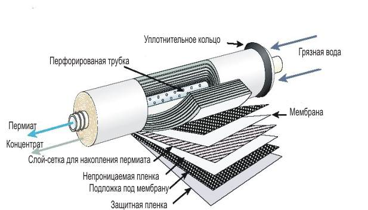

Зворотний осмос: найефективніша технологія очищення води сьогодні
У світі існує безліч способів фільтрації, але якщо ваша мета — абсолютна чистота, то єдиним беззастережним рішенням є зворотний осмос. Це технологія, яка перетворює будь-яку воду на еталон чистоти, видаляючи навіть ті забруднення, які пропускають звичайні фільтри.
Що таке зворотний осмос і як він працює?
У звичайному фільтрі вода проходить через пористий матеріал, який затримує бруд. У системі зворотного осмосу все інакше. Тут використовується спеціальна напівпроникна мембрана з неймовірно малими порами (близько 0,0001 мікрона).
Процес працює так: Під дією тиску вода буквально «просочується» крізь мембрану. Пори настільки малі, що крізь них проходять лише молекули чистої води (H2O). Усе інше — бактерії, віруси, важкі метали, солі жорсткості та пестициди — просто не можуть пройти й скидаються в дренаж.
Чому зворотний осмос кращий за інші методи?
Якщо порівняти осмос із вугільними чи керамічними фільтрами, переваги стають очевидними:
- 100% захист від мікробіології. Віруси й бактерії фізично не можуть пройти крізь мембрану.
- Видалення розчинених солей. Осмос прибирає надлишок кальцію та магнію, запобігаючи появі накипу.
- Очищення від хімії. Фтору, хлору та залишків антибіотиків у воді більше не буде.
- Стабільність результату. Якість води не залежить від того, наскільки забруднений водогін сьогодні — мембрана завжди працює однаково ефективно.
Важливий нюанс: мінералізація
Багато хто побоюється, що осмос робить воду «порожньою». У Crystal Water ми вирішуємо цю проблему за допомогою етапу постмінералізації. Після очищення у воду повертаються суворо вивірені дози корисних мінералів, щоб вона була не лише чистою, а й корисною для організму.
Не йдіть на компроміси з якістю
Ваше здоров'я заслуговує на воду, очищену за найвищим стандартом. Замовляйте доставку води, що пройшла систему зворотного осмосу, в Бровари і Київ від Crystal Water.
Замовити воду ідеальної чистоти